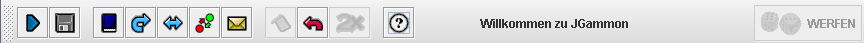

JGammon - Fenster und Dialoge
Die Werkzeugleiste

Die Werkzeugleiste ist frei beweglich und kann mit der Maus bewegt werden.
Sie kann als eigenes Fenster angezeigt werden oder "angedockt" an das Hauptfenster,
dann links, rechts, oben oder unten (empfohlen ist oben).
Sie Aktionen, die mit einer Taste verknüpft ist, im Moment nicht verfügbar, so
ist diese Taste deaktiviert.